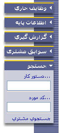
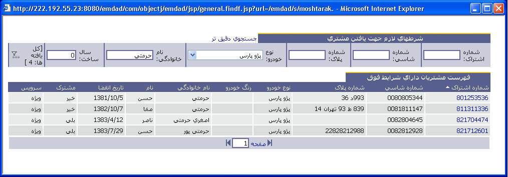
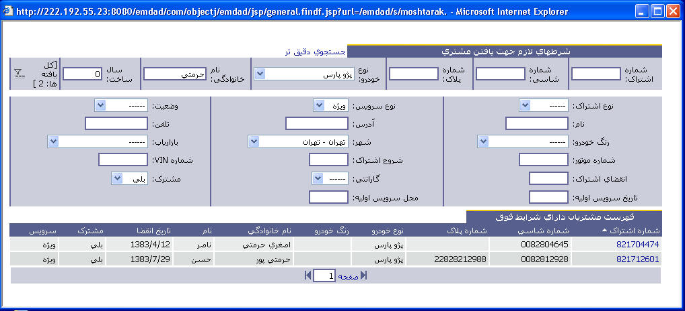

|
 جستجو - جستجو رخداد یا دستور کار: در سمت چپ صفحه منو، اگر روی جستجو کلیک کنید منوئی مطابق این شکل باز میشود که میتوانید با نوشتن کد دستور کار در جعبه دستور کار و یا کد رخداد در جعبه رخداد یک دستور کار یا رخداد مورد نظر را جستجو کنید.
- جستجوی شخص یا ماشین: همچنین اگر بخواهید شخصی یا ماشینی را جستجو کنید میتوانید روی لینک جستجوی مشتری کلیک کنید، پس از این کار صفحهای مانند شکل زیر باز میشود که میتوانید مشخصات را وارد کرده و عملیات جستجو را انجام دهید. 
- جستجوی دقیق: اگر احتیاج به جستجوی دقیقتر دارید میتوانید روی گزینه جستجوی دقیقتر کلیک کرده تا پنجره جستجو به شکل زیر در آید. حال شما میتوانید از روی جزئیات بیشتر و دقیقتر عملیات جستجو را انجام دهید.

|